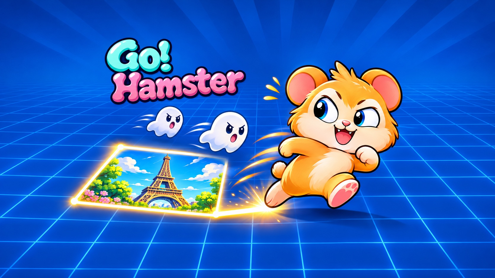

GO! HAMSTER / ПОДДЕРЖКА ИГРОКОВ
Большое приключение.
Помощь рядом.
Застряли на уровне? Не слушается пульт? Вы по адресу. Поможем вернуться к приключению.

Маленькие лапы. Любой экран.
Помощь для телефонов, планшетов и телевизоров.
Осваивайтесь.
Вы дома.
Выберите устройство: подскажем, как управлять игрой и решить проблему.
Сенсорное управление
Двигайтесь с помощью выбранной схемы управления. Кнопка паузы на экране позволяет продолжить, перезапустить уровень или вернуться к выбору уровней.
Что-то не работает?
Перезапустите игру и проверьте обновления приложения и системы. На iPad попробуйте обе ориентации. Если проблема с интерфейсом, укажите модель устройства.
Сенсорное управление
Двигайтесь с помощью выбранной схемы управления. Системная кнопка «Назад» открывает паузу во время игры и возвращает на предыдущий экран в меню.
Что-то не работает?
Перезапустите игру и проверьте обновления приложения и Android. Если управление кажется непривычным, проверьте его схему в настройках перед новой попыткой.
Пульт Siri Remote
Управляйте направлениями или свайпами по сенсорной поверхности. В меню перемещайте фокус и нажимайте Select. Кнопка Back/Menu открывает паузу во время игры.
Пульт не отвечает?
Проверьте подключение и заряд пульта. Напишите модель Apple TV, версию tvOS и уточните, что не работает: свайпы, кнопки или всё вместе.
Пульт телевизора
Управляйте стрелками. В меню перемещайте фокус и нажимайте OK. Кнопка «Назад» открывает паузу в игре и сначала закрывает текущее меню.
Не двигается фокус?
Проверьте подключение пульта и перезапустите игру. Укажите модель телевизора или приставки, версию Android TV и экран, на котором возникла проблема.
Телевизионные версии готовятся к выпуску. Инструкции подходят и для тестовых сборок; доступность и функции зависят от установленной версии.
Короткий путь
к ответу.
Чтобы между вами и следующим уровнем не оставалось вопросов.
Как открыть Classic и бесконечный режим?
Собирайте звёзды в игре. Classic открывается за 30 звёзд, бесконечный режим — за 60. В мировом туре проходите доступные уровни, чтобы открыть следующую остановку.
Чем отличаются три режима?
В мировом туре вы открываете достопримечательности, захватывая территорию. Classic — ретроприключение из 20 этапов. В бесконечном режиме каждый этап предлагает новый сгенерированный вызов; игра сохраняет рекорд забега.
Можно играть без интернета?
Основная игра работает офлайн. Интернет нужен для сетевых функций: рейтингов, достижений и рекламы, если они включены в вашей версии.
Где хранится мой прогресс?
Прогресс хранится на устройстве. При проблемах не удаляйте приложение и не очищайте его данные: сохранение можно потерять. Сам по себе вход в Game Center или Play Games не означает, что облачные сохранения включены.
Почему на устройствах разные функции?
У сенсорных экранов и телевизоров разные управление и настройки. Напоминания доступны на поддерживаемых мобильных устройствах. На Android может быть включена реклама; на iPhone, iPad и Apple TV её нет.
Как изменить разрешения?
В настройках игры можно управлять необязательной диагностикой и, где доступно, рекламными предпочтениями. Разрешение на уведомления меняется в настройках устройства. Подробности — в политике конфиденциальности.
Игра вылетела или что-то отображается неправильно. Что делать?
Откройте игру снова и проверьте обновления. Если ошибка повторяется, пришлите платформу, модель устройства, версии системы и игры, а также шаги для повторения. Скриншот или короткая запись помогут; скройте личные данные.
НА СВЯЗИ — ЧЕЛОВЕК
Разберёмся
вместе.
Ошибка, вопрос или отличная идея? Напишите напрямую разработчику. Несколько деталей помогут быстрее найти решение.
Написать разработчику ivderezin@gmail.comЧто полезно указать
- Модель устройства и версию системы
- Версию игры и игровой режим
- Что произошло и как это повторить
- Скриншот или запись, если пригодится
Не присылайте пароли, коды входа и платёжные данные.